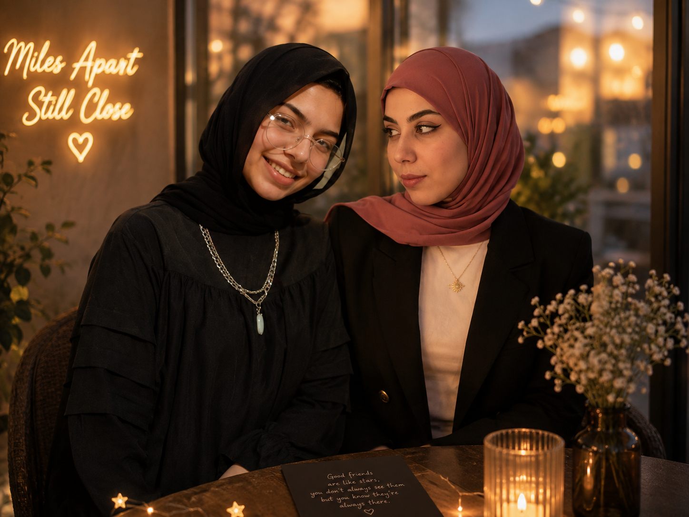

We met through a screen…
Never in the same place.
Never took a real photo together.
But somehow…
You became a very real part of my life. 🤍
Happy Birthday, Noor
One message… and then there was a story
One message became hundreds.
Hundreds became memories.
Some numbers don't tell the whole story
Times we've met in real life
Real photos together
Conversations
Laughs
Memories
1 very real friendship. 🤍
Things I love about you
Tap each card to reveal ✨
What distance could never take away
No shared place needed—these were always real.
Looking at the same moon from different places
01Conversations that made ordinary days feel lighter
02Laughs that travelled farther than distance ever could
03Little details that somehow became unforgettable
04A friendship that never needed the same room to feel real
05Wait… we don't actually have a photo together
So I cheated a little 👀

Before you continue…
Close your eyes and make a wish ✨
One last thing…
There is a little letter waiting for you
26 · 08 · 2000
Happy Birthday, Noor.
Different lives.
One unexpected friendship.
“We may never share the same place, but I'm glad we shared a part of our lives.”